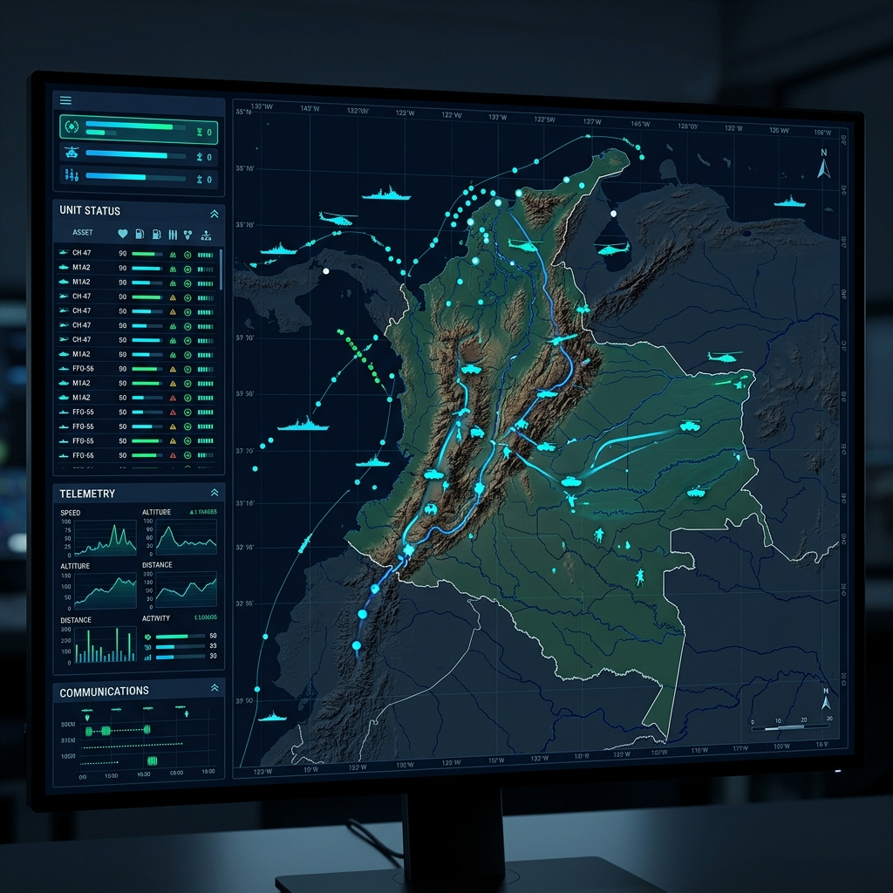
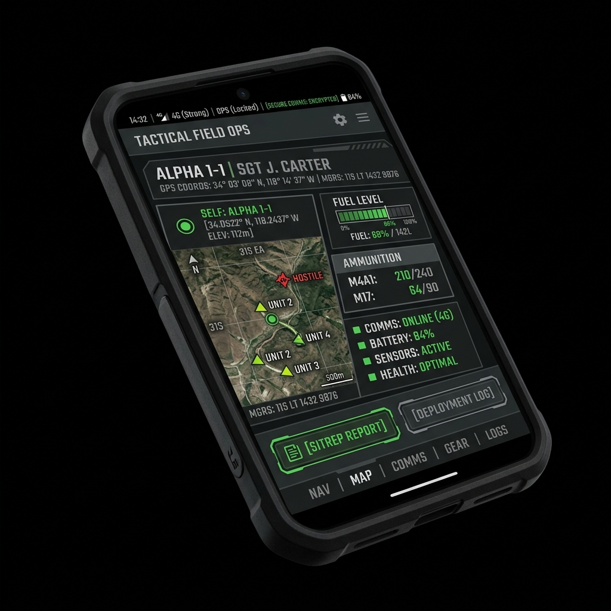
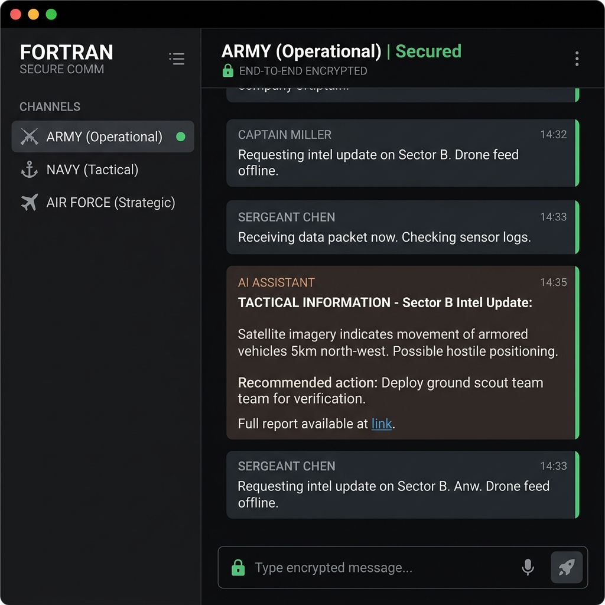
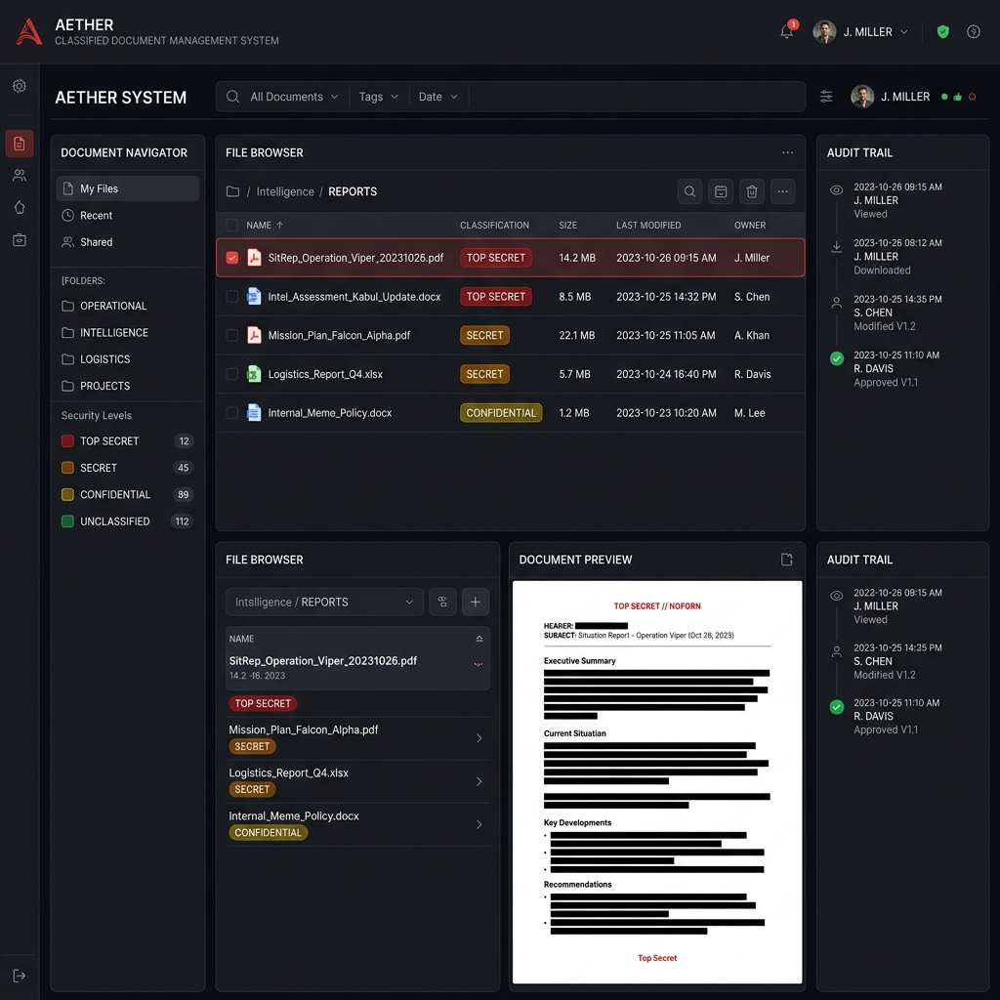
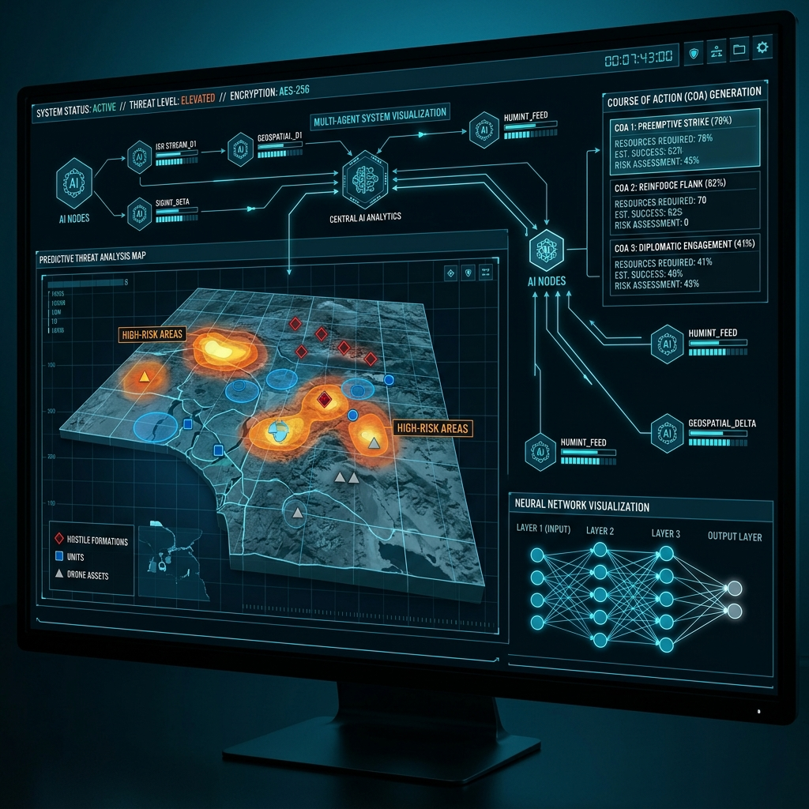
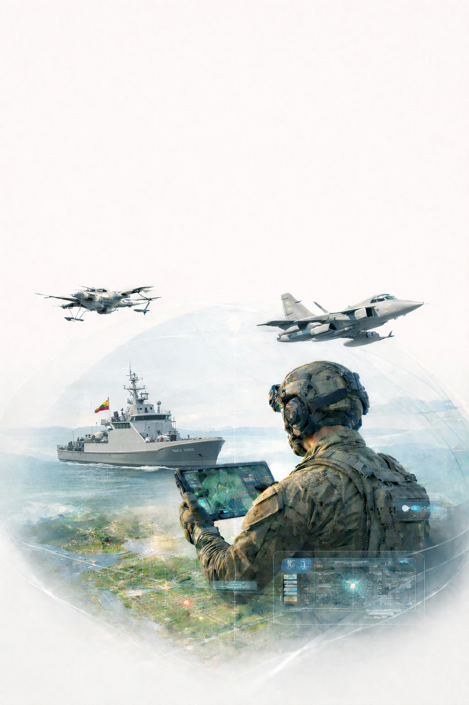
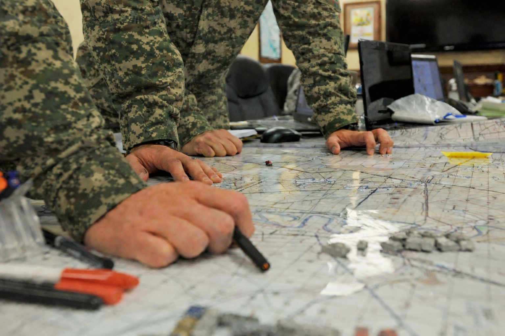
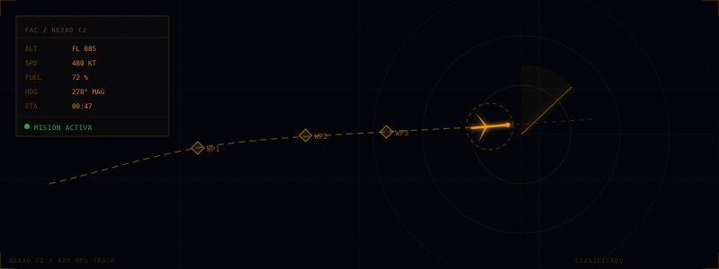

NEXXO C2 acelera el ciclo OODA de las Fuerzas Militares de Colombia. Imagen operacional común en tiempo real. Soberanía tecnológica total.
El sistema completo de Mando y Control diseñado para el teatro de operaciones colombiano. Modular, resiliente, soberano.
Dashboard táctico web con mapa geoespacial de Colombia. COP con tracking de activos terrestres, navales y aéreos en tiempo real. Visión 360° del teatro de operaciones desde cualquier navegador.

App móvil de campo. GPS en formato MGRS, telemetría de combustible y municiones, reporte rápido de SITREPs y MEDEVAC. Opera en entornos DDIL sin conectividad constante.

Comunicaciones seguras con cifrado end-to-end y asistente de IA integrado para coordinación operacional soberana. Sin dependencia de infraestructura o servidores extranjeros.

Gestión documental clasificada con niveles de seguridad diferenciados. Auditoría completa de acceso y búsqueda inteligente de documentos operacionales. Control granular por perfil.

IA multiagente para defensa. Análisis predictivo de amenazas, generación de Cursos de Acción (COA) y fusión de inteligencia HUMINT, SIGINT y GEOINT desde múltiples fuentes.

Dispositivo táctico ruggedizado. Microcontrolador ARM, GPS militar, pantalla OLED, comunicación segura cifrada. Edge computing autónomo en campo de batalla.

Las Fuerzas Militares operan con datos fragmentados, ciclos de decisión lentos y dependencia de tecnología extranjera. NEXXO C2 resuelve los tres problemas simultáneamente: soberanía, velocidad y precisión operacional.
Iniciar Conversación →
/01 — Ejército NacionalTracking de infantería, blindados y artillería en 8 Divisiones. Gestión de líneas de coordinación de fuego, rutas de abastecimiento y zonas de operación en tiempo real.
Monitoreo de buques ARC, lanchas fluviales y operaciones de interdicción en Pacífico, Caribe y ríos principales. Integración AIS y datos radar naval.

/03 — Fuerza Aeroespacial (FACS)Control de aeronaves con telemetría de combustible y estado de misión. Planes de vuelo activos, UAVs y coordinación de apoyo aéreo cercano (CAS).
Años de I+D en tecnología
de defensa colombiana
Cobertura de dominio
terrestre, naval y aéreo
Datos bajo soberanía
y jurisdicción colombiana
Opera en ambientes Denied,
Degraded, Intermittent, Limited
La independencia tecnológica no es opcional. Es el fundamento de la seguridad nacional colombiana.
Despliegue en infraestructura del Ministerio de Defensa. Sin dependencia de hyperscalers extranjeros. Control total sobre datos operacionales clasificados. Nube táctica en servidores bajo custodia militar.
Arquitectura diseñada según estándares de seguridad de la información militar colombiana. Cifrado certificado, auditoría completa de acceso. 100% del código fuente disponible para inspección del CCOC.
Programa de formación para ingenieros militares colombianos. El objetivo: que Colombia opere, mantenga y evolucione NEXXO C2 de forma completamente autónoma en el largo plazo.
HOLO trabaja con las Fuerzas Militares de Colombia, entidades de defensa regional y organismos de seguridad ambiental. Conectemos y exploremos cómo NEXXO C2 puede fortalecer su capacidad operacional.
Sesión técnica con el equipo HOLO